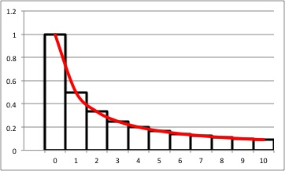
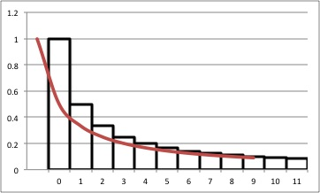

経済学で出る数学
ワークブックでじっくり攻める：応用問題
『経出る』4.4節 割引現在価値の和は，複利計算が前提．
この問題では単利による割引現在価値にした場合の評価式をあたえた．これを一般の双曲割引関数で現在価値に割引いたときの評価式をあたえる.
（作成 2015.11.22）
【問１】 次の級数の収束・発散を判定しなさい．
\[
（一般の双曲割引による割引現在価値の和）
=\sum_{t=1}^{\infty} \dfrac{w}{(1+tr)^{\frac{\gamma}{r}}}．
\]
【解答】
\[
\begin{align}
\sum_{t=0}^{T} \dfrac{w}{(1+tr)^{\frac{\gamma}{r}}} &
\leq \int_{0}^{T}\dfrac{w}{(1+tr)^{\frac{\gamma}{r}}}dt
=\Bigl[\dfrac{w}{r-\gamma}\log_{}{(1+tr)^{\frac{r -\gamma}{r}}}\Bigr]^{T}_{0}\\
&=\dfrac{w}{r-\gamma}\log_{}{(1+Tr)^{\frac{r -\gamma}{r}}}
+\dfrac{w}{\gamma -r}\\
&=\dfrac{w}{r-\gamma}\log_{}{(1+Tr)^{1-\frac{\gamma}{r}}}
+\dfrac{w}{\gamma -r}
\end{align}
\]．

【解答終】
一方で，次の評価式も得られる．
\[
\begin{align}
\sum_{t=0}^{T} \dfrac{w}{(1+tr)^{\frac{\gamma}{r}}}
&=w+\sum_{t=1}^{T} \dfrac{w}{(1+tr)^{\frac{\gamma}{r}}}\\
&\geq w+\int_{1}^{T}\dfrac{w}{(1+tr)^{\frac{\gamma}{r}}}dt
=w+\Bigl[\dfrac{w}{r-\gamma}\log_{}{(1+tr)^{\frac{r -\gamma}{r}}}\Bigr]^{T}_{1}\\
&=w+\dfrac{w}{r-\gamma}\log_{}{(1+Tr)^{\frac{r -\gamma}{r}}}-
\dfrac{w}{r-\gamma}\log_{}{(1+r)^{\frac{r -\gamma}{r}}}\\
&=\frac{w}{r-\gamma}\Bigl[1+\log_{}{(1+r)^{\frac{r -\gamma}{r}}}-\log_{}{(1+r)^{\frac{r-\gamma}{r}}}\Bigr]
\end{align}
\]．

まとめると，
\[
\frac{w}{r-\gamma}\Bigl[1+\log_{}{(1+Tr)^{\frac{r -\gamma}{r}}}-\log_{}{(1+r)^{\frac{r-\gamma}{r}}}\Bigr]
\leq
\sum_{t=0}^{T} \dfrac{w}{(1+tr)^{\frac{\gamma}{r}}}
\leq
\dfrac{w}{r-\gamma}\log_{}{(1+Tr)^{\frac{r-\gamma}{r}}}
+\dfrac{w}{\gamma -r}\tag{1}
\]
$T \to \infty$ とすると，
$\lim_{T\to \infty}\dfrac{w}{r-\gamma}\log_{}{(1+Tr)^{\frac{r-\gamma}{r}}}
=\dfrac{w}{r}\lim_{T\to \infty}(\log_{}{(1+Tr))}=\infty$，
$\lim_{T\to \infty}\dfrac{w}{r-\gamma}\Bigl[\log_{}{(1+Tr)^{\frac{r -\gamma}{r}}}\Bigr]
=\dfrac{w}{r}\lim_{T\to \infty}(\log_{}{(1+Tr))}=\infty
$
\[
\displaystyle \sum_{t=0}^{\infty} \dfrac{w}{(1+tr)^{\frac{\gamma}{r}}} =\infty\]．
【メモ】
-
$\dfrac{w}{(1+tr)^{\frac{\gamma}{r}}}$は双曲割引関数の一般型（generalized hyperbolic discount function）．
-
$r=\gamma$ のときの評価式が
ここ
【メモ終】
【Further Reading】
多田洋介『行動経済学入門』日本経済新聞社（2003）
ふろく（２）応用問題 一覧へ